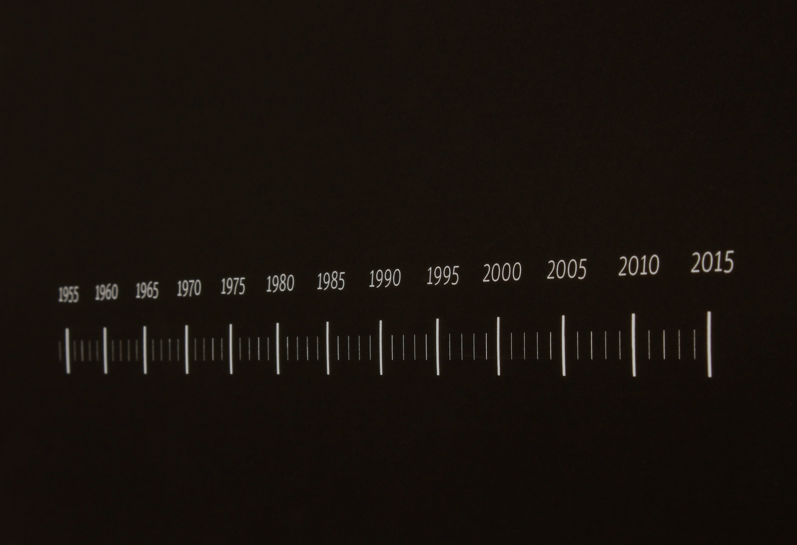
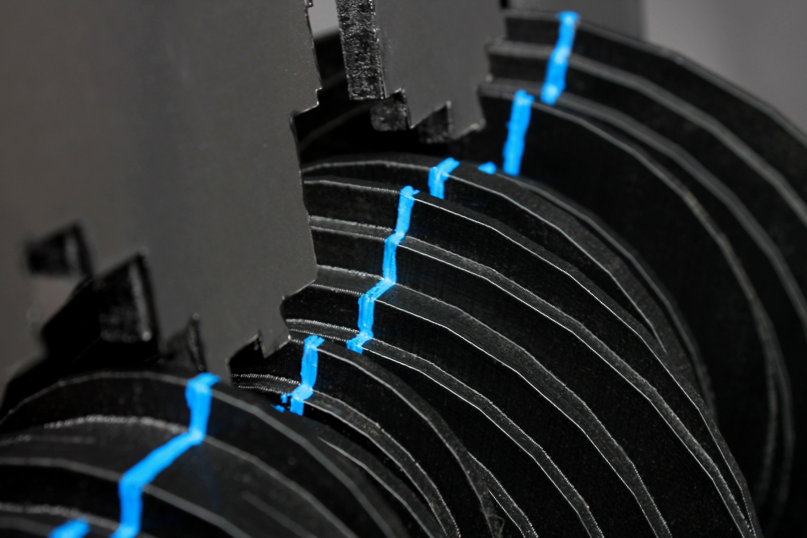
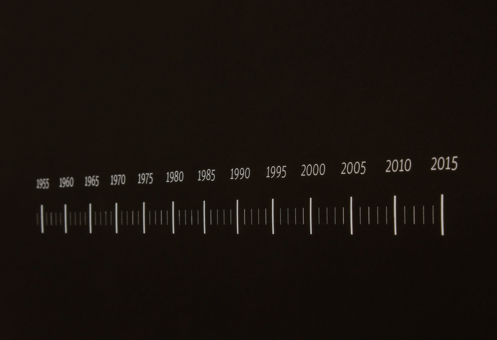
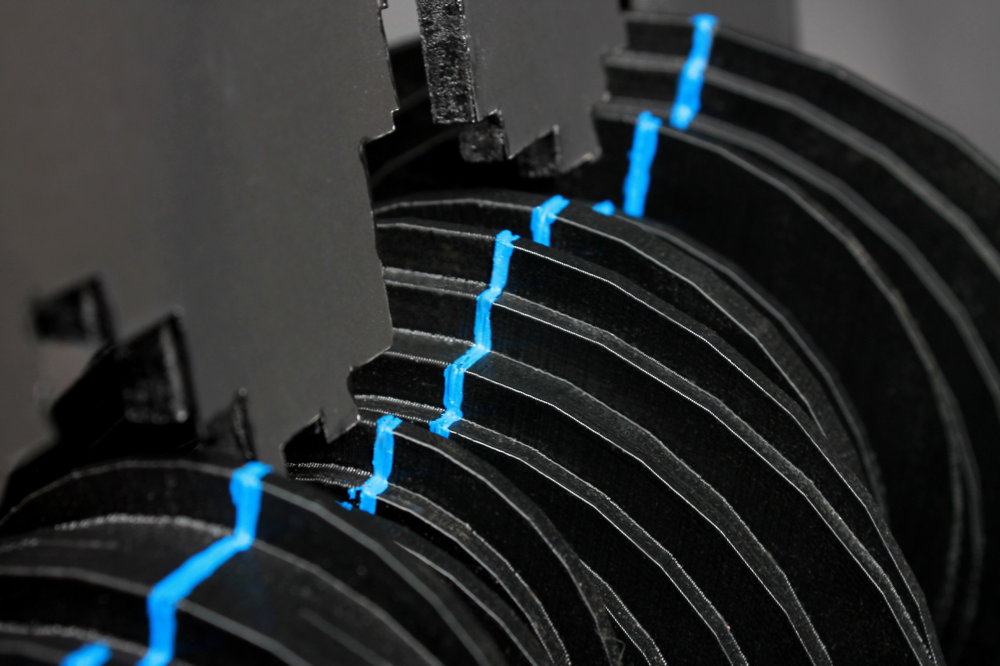

PROJECT RHYTHM
Every slice of this object represents one year in the german history of migration between 1952 and 2016. The green line is the amplitude of the immigration and the blue line stands for the emigration. The rhythm of migration is determined by an interplay between immigration and emigration and while turning the object this rhythm gets visualized.
The wave of refugees reaching Germany in the years 2015 and 2016 made me think a lot about this subject. Observing the objects body one can sense – maybe better than through any numeral statistic – we really are on a peak of immigration right now. Simultaneously one realizes that there have always been waves of refugees and also waves of people leaving Germany. So the rhythm of migration is not only defined by the interplay of immigration and emigration but also by the quantitative change of migrating people over the decades. Rhythm it is!
Muthesius University of Fine Arts Interactive Design Supervised by Prof. Tom Duscher Winter Term 2016/17

 


